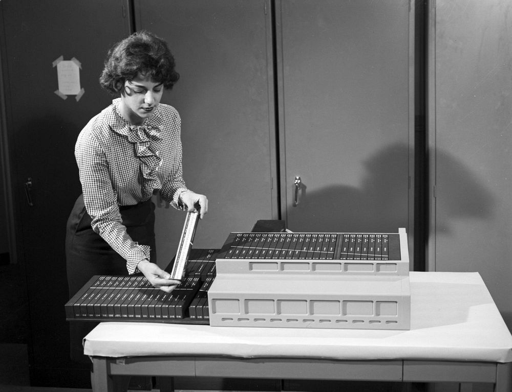
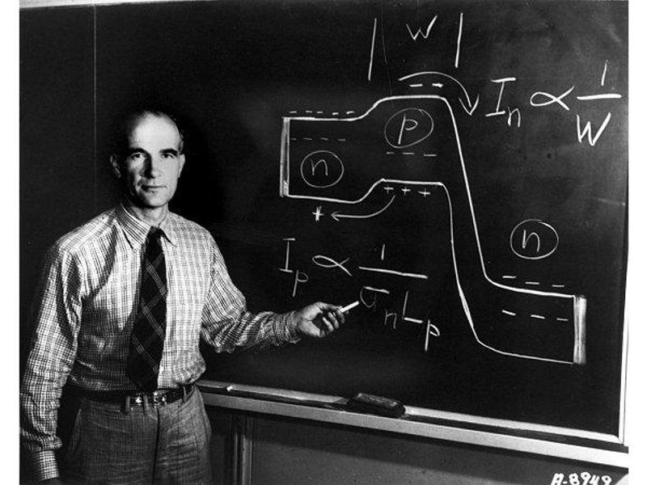

Watch this short video from Harvard's Project Implicit to understand the basics of implicit bias and how it affects our daily decisions.
Implicit bias refers to the attitudes or stereotypes that influence our understanding, actions, and decisions in an unconscious manner. These biases, which we hold towards certain groups of people, can influence how we perceive others based on their race, gender, age, religion, and other characteristics. Implicit biases are formed over time through our experiences and societal influences, and they can be at odds with our conscious beliefs. Unlike explicit biases, which we are aware of, implicit biases operate below our level of awareness.
The term "intersectionality" was coined by Kimberlé Crenshaw to describe the ways in which various forms of social stratification, such as race, gender, class, and other aspects of identity, intersect and create unique systems of oppression or privilege. In the context of implicit bias, intersectionality helps us understand how a person’s identity can be influenced by multiple factors, such as being a woman of color, or a low-income immigrant. These intersections create compounded biases that cannot be understood by examining only one aspect of a person’s identity. For example, biases against Black women are not simply the sum of biases against Black people and biases against women, they are uniquely shaped by the combination of race and gender.
Expanding on this, intersectionality, as described by Patricia Hill Collins and Sirma Bilge (2016), is a way of understanding and analyzing the complexity in the world, in people, and in human experiences. The events and conditions of social and political life and the self can seldom be understood as shaped by one factor. They are generally shaped by many factors in diverse and mutually influencing ways. When it comes to social inequality, people’s lives and the organization of power in a given society are better understood as being shaped not by a single axis of social division, be it race or gender or class, but by many axes that work together and influence each other. Intersectionality as an analytic tool gives people better access to the complexity of the world and of themselves.
The Harvard Implicit Association Test (IAT) is a tool designed to measure the strength of automatic associations people have between different concepts, such as race or gender. The Asian-European American IAT measures implicit bias related to attitudes towards individuals of Asian and European American descent. The test asks participants to quickly associate words related to each group with positive and negative attributes.
Research using the Asian-European American IAT has found that many participants, regardless of their own race, tend to show implicit bias favoring European Americans over Asian Americans. This bias can be influenced by societal stereotypes that link European Americans with traits like success, leadership, and competence, while Asian Americans are often stereotyped as 'model minorities,' quiet, hardworking, and obedient. While this stereotype may seem positive on the surface, it can perpetuate harmful assumptions and limit the full recognition of the diversity and complexity within Asian American communities.
The results of the Asian-European American IAT and other similar tests show how deep-rooted and pervasive implicit biases can be. They highlight how even well-intentioned individuals can have biases that affect their thoughts and actions in ways they may not be aware of. Importantly, these tests provide a window into how societal narratives and stereotypes shape our perceptions of different racial and ethnic groups. Acknowledging and reflecting on our own biases is an essential step towards reducing their impact.
Reflecting on the Harvard IAT focused on Asian Americans, I found it revealing in ways I didn’t expect. This version measures how quickly I associate faces of Asian people and Caucasian people, along with symbols like U.S. flags, foreign flags, coats of arms, and country outlines, with the categories “American” or “Foreign.” Because the task is timed, it captures automatic reactions rather than carefully reasoned answers.As someone from an Asian American background, the experience felt personal. When “Asian” is paired with “Foreign” and “Caucasian” with “American,” responses can feel smoother. Midway through the test, the button assignments flip, forcing “Asian” with “American” and “Caucasian” with “Foreign.” That sudden switch makes any hesitation noticeable and highlights how ingrained certain associations may be. The speed of the test leaves little room to consciously correct myself.
As someone from an Asian American background, the experience felt personal. When “Asian” is paired with “Foreign” and “Caucasian” with “American,” responses can feel smoother. Midway through the test, the button assignments flip, forcing “Asian” with “American” and “Caucasian” with “Foreign.” That sudden switch makes any hesitation noticeable and highlights how ingrained certain associations may be. The speed of the test leaves little room to consciously correct myself.
What stood out is that bias here isn’t necessarily intentional. Even if I consciously reject the idea that Asian faces are “less American,” my reaction times can suggest I’ve internalized broader cultural messages linking “American” with whiteness. The test doesn’t label character, but it does expose how unconscious patterns can shape perception. For me, it serves as a prompt to reflect on where those associations come from and how they might subtly influence my thinking.

Implicit bias extends into technology and media, where power dynamics and coded language perpetuate inequalities. As Joseph Nye defines it, power is "the ability to influence the behavior of others to get the outcomes one wants." In tech and media, this manifests through discursive, access, and resource power, as outlined by John Street (2010) in Mass Media, Politics and Democracy:
Code itself acts as a "linguistic-like convention" enabling preferential access or interpretability. Common codes include Morse Code, PINs, ISSNs, and classification systems like E185.97.L5 A3 1966b (for The Autobiography of Malcolm X) or DDS. Coded words, such as "the fairer sex" (women), "illegals" (undocumented immigrants), "thugs" (often racialized for Black men), and "victims" (diminishing agency), allow subtle communication of biases.
In a networked society, as modeled by Manuel Castells (2000), actors interact through layers of social structure, experience, culture, power, and technology, mediated by codes of behavior and information. Global Tier 1 networks (e.g., AT&T, Verizon) symbolize the infrastructure of connectivity, yet often exclude marginalized groups, reinforcing implicit biases in digital access and representation.

Implicit biases contribute to persistent underrepresentation in tech. Here's an update on key statistics:
| Year | Percentage |
|---|---|
| 1980 | 5% |
| 1990 | 9% |
| 2000 | 11% |
| 2010 | 14% |
| 2023 | 15% |
| 2025 (est.) | 15-17% |
Source: Society of Women Engineers (SWE), U.S. Bureau of Labor Statistics (BLS).
Women hold about 25-33% of executive/manager roles at top firms (e.g., Amazon 29%, Meta 36.7%, Apple 31%, Google 32.8%, Microsoft 31.6%). Overall tech workforce: 35% women.
| Group | Overall Workforce % | Technical Roles % | Leadership % |
|---|---|---|---|
| White | 62-67% | 56-72% | 83% |
| Asian | 20-34% | 34% | 10% |
| Black | 7-9% | 6% | 2% |
| Hispanic/Latinx | 5.9-8% | 5.9% | 5% |
| Native American/Indigenous | <1% | <1% | <1% |
Source: CBRE, McKinsey, U.S. Census.
Lisa Nakamura's "Indigenous Circuits" (2022) uncovers a buried story in computer history: From 1965-1975, Fairchild Semiconductor ran a plant on Navajo land in Shiprock, New Mexico, employing mostly Navajo women to assemble integrated circuits for early computers and military tech. This was a precursor to global outsourcing, exploiting racialized labor under the guise of empowerment. Navajo women were stereotyped as ideal workers due to "nimble fingers" from traditional weaving, equated to circuit assembly. The plant closed amid protests by the American Indian Movement, highlighting colonial exploitation. This case exemplifies intersectional implicit bias: gender, race, and class intersecting to marginalize Indigenous women in tech's foundation, challenging Silicon Valley's meritocratic narrative.